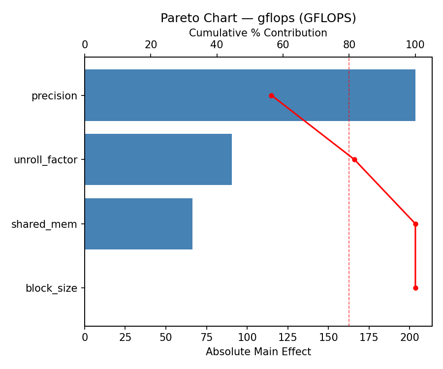
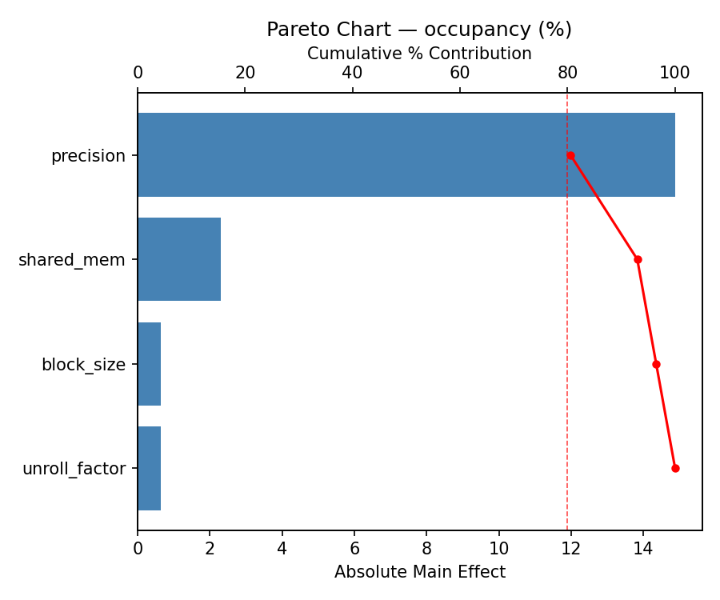
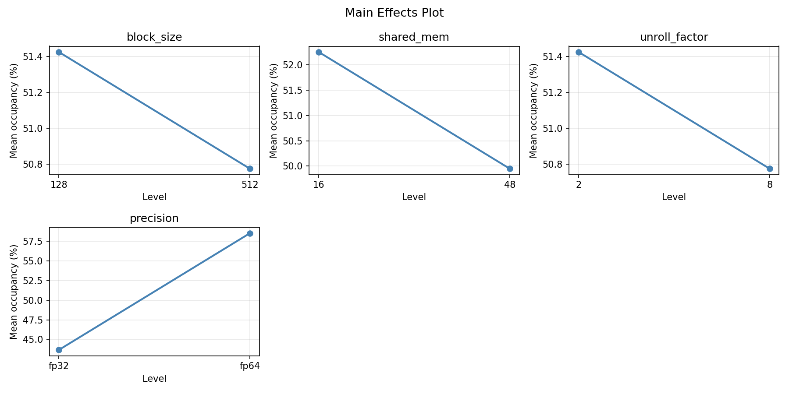
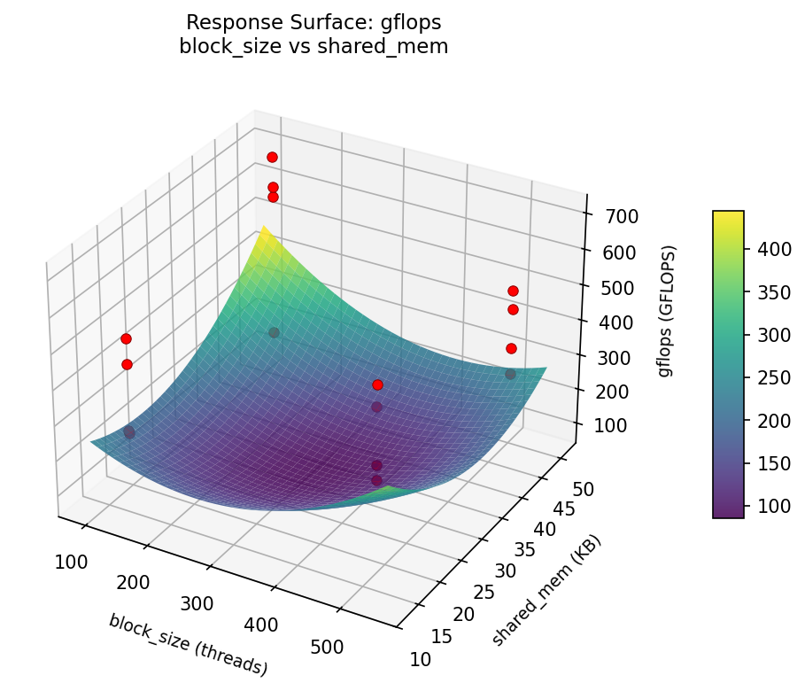
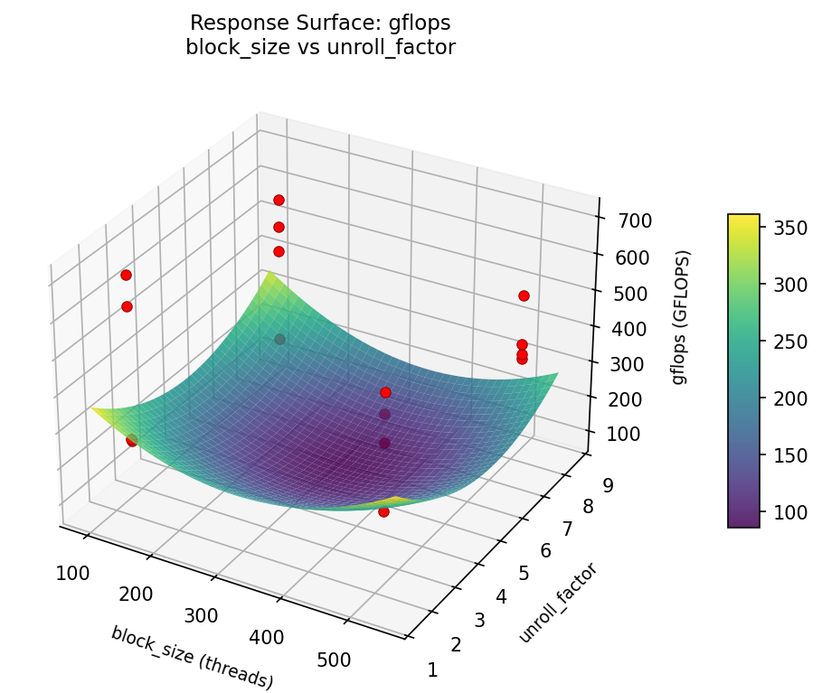
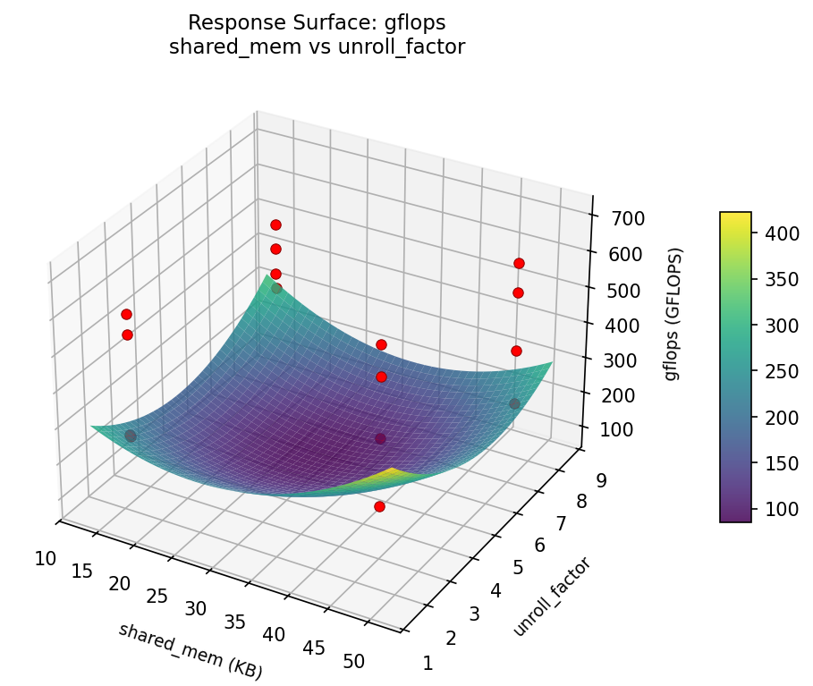
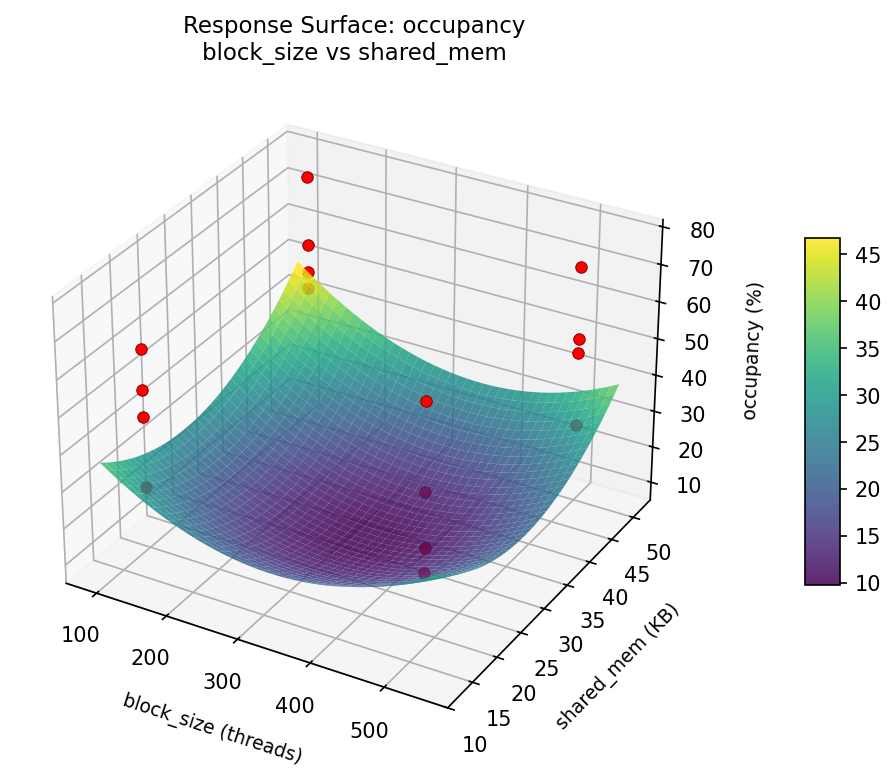
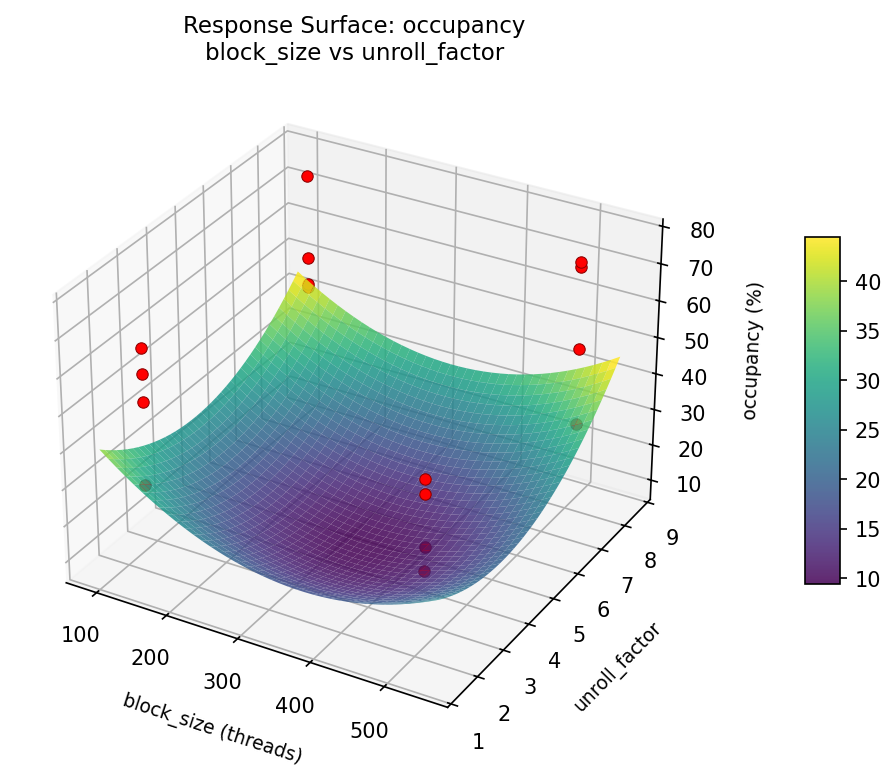
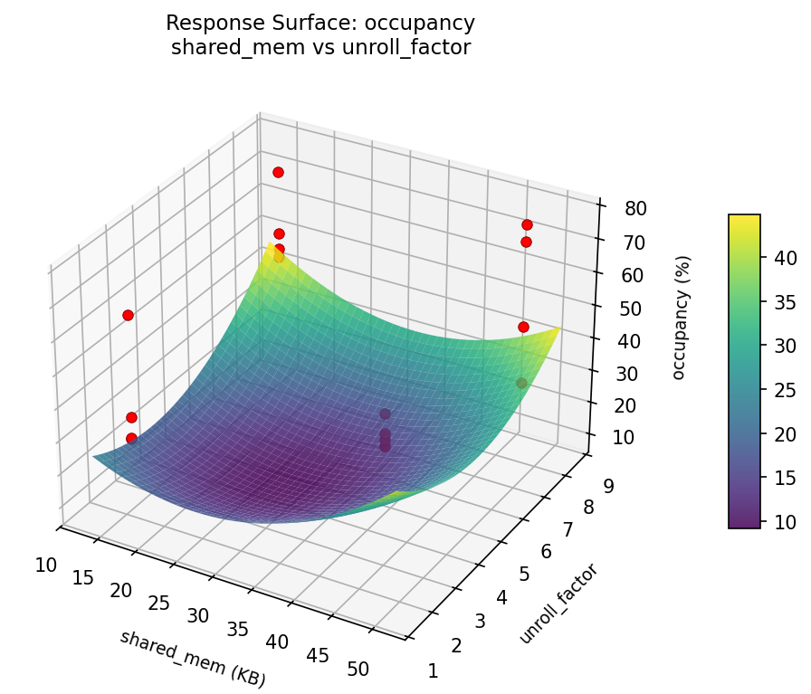

Summary
This experiment investigates gpu kernel optimization. Full factorial design to optimize GPU kernel launch parameters for maximum throughput and occupancy.
The design varies 4 factors: block size (threads), ranging from 128 to 512, shared mem (KB), ranging from 16 to 48, unroll factor, ranging from 2 to 8, and precision, ranging from fp32 to fp64. The goal is to optimize 2 responses: gflops (GFLOPS) (maximize) and occupancy (%) (maximize). Fixed conditions held constant across all runs include gpu model = A100, problem size = 8192.
A full factorial design was used to explore all 16 possible combinations of the 4 factors at two levels. This guarantees that every main effect and interaction can be estimated independently, at the cost of a larger experiment (16 runs).
Quadratic response surface models were fitted to capture potential curvature and factor interactions. The RSM contour plots below visualize how pairs of factors jointly affect each response.
Key Findings
For gflops, the most influential factors were precision (45.8%), unroll factor (41.9%), block size (9.7%). The best observed value was 705.9 (at block size = 128, shared mem = 16, unroll factor = 8).
For occupancy, the most influential factors were block size (42.2%), shared mem (32.9%), precision (21.7%). The best observed value was 77.0 (at block size = 128, shared mem = 48, unroll factor = 2).
Recommended Next Steps
- Consider whether any fixed factors should be varied in a future study.
Experimental Setup
Factors
| Factor | Levels | Type | Unit |
|---|---|---|---|
block_size | 128, 512 | continuous | threads |
shared_mem | 16, 48 | continuous | KB |
unroll_factor | 2, 8 | continuous | |
precision | fp32, fp64 | categorical |
Fixed: gpu_model=A100, problem_size=8192
Responses
| Response | Direction | Unit |
|---|---|---|
gflops | ↑ maximize | GFLOPS |
occupancy | ↑ maximize | % |
Experimental Matrix
The Full Factorial Design produces 16 runs. Each row is one experiment with specific factor settings.
| Run | block_size | shared_mem | unroll_factor | precision |
|---|---|---|---|---|
| 1 | 128 | 48 | 8 | fp64 |
| 2 | 512 | 16 | 2 | fp64 |
| 3 | 128 | 48 | 2 | fp64 |
| 4 | 128 | 48 | 8 | fp32 |
| 5 | 512 | 48 | 8 | fp32 |
| 6 | 512 | 16 | 8 | fp32 |
| 7 | 512 | 48 | 2 | fp32 |
| 8 | 512 | 16 | 2 | fp32 |
| 9 | 128 | 16 | 2 | fp64 |
| 10 | 128 | 16 | 8 | fp32 |
| 11 | 512 | 48 | 2 | fp64 |
| 12 | 512 | 48 | 8 | fp64 |
| 13 | 128 | 48 | 2 | fp32 |
| 14 | 512 | 16 | 8 | fp64 |
| 15 | 128 | 16 | 2 | fp32 |
| 16 | 128 | 16 | 8 | fp64 |
How to Run
Analysis Results
Generated from actual experiment runs.
Response: gflops
Pareto Chart

Main Effects Plot

Response: occupancy
Pareto Chart

Main Effects Plot

Response Surface Plots
3D surfaces fitted with quadratic RSM. Red dots are observed data points.
How to Read These Surfaces
Each plot shows predicted response (vertical axis) across two factors while other factors are held at center. Red dots are actual experimental observations.
- Flat surface — these two factors have little effect on the response.
- Tilted plane — strong linear effect; moving along one axis consistently changes the response.
- Curved/domed surface — quadratic curvature; there is an optimum somewhere in the middle.
- Saddle shape — significant interaction; the best setting of one factor depends on the other.
- Red dots far from surface — poor model fit in that region; be cautious about predictions there.
gflops (GFLOPS) — R² = 0.941, Adj R² = 0.118
The model fits well — the surface shape is reliable.
Curvature detected in block_size, shared_mem — look for a peak or valley in the surface.
Strongest linear driver: unroll_factor (increases gflops).
Notable interaction: block_size × precision — the effect of one depends on the level of the other. Look for a twisted surface.
occupancy (%) — R² = 0.775, Adj R² = -2.381
Moderate fit — surface shows general trends but some noise remains.
Curvature detected in unroll_factor, block_size — look for a peak or valley in the surface.
Strongest linear driver: shared_mem (decreases occupancy).
Notable interaction: block_size × shared_mem — the effect of one depends on the level of the other. Look for a twisted surface.
gflops: block size vs shared mem

gflops: block size vs unroll factor

gflops: shared mem vs unroll factor

occupancy: block size vs shared mem

occupancy: block size vs unroll factor

occupancy: shared mem vs unroll factor

Full Analysis Output
Optimization Recommendations
Multi-Objective Optimization
When responses compete, Derringer–Suich desirability finds the best compromise. Each response is scaled to a 0–1 desirability, then combined via a weighted geometric mean.
Per-Response Desirability
| Response | Weight | Desirability | Predicted | Dir |
|---|---|---|---|---|
gflops |
1.5 |
0.7541
|
593.50 0.7541 593.50 GFLOPS | ↑ |
occupancy |
1.5 |
0.9545
|
77.00 0.9545 77.00 % | ↑ |
Recommended Settings
| Factor | Value |
|---|---|
block_size | 512 threads |
shared_mem | 48 KB |
unroll_factor | 2 |
precision | fp32 |
Source: from observed run #10
Trade-off Summary
Sacrifice = how much worse than single-objective best.
| Response | Predicted | Best Observed | Sacrifice |
|---|---|---|---|
occupancy | 77.00 | 77.00 | +0.00 |
Top 3 Runs by Desirability
| Run | D | Factor Settings |
|---|---|---|
| #6 | 0.7610 | block_size=128, shared_mem=16, unroll_factor=2, precision=fp64 |
| #15 | 0.7222 | block_size=512, shared_mem=48, unroll_factor=8, precision=fp64 |
Model Quality
| Response | R² | Type |
|---|---|---|
occupancy | 0.4192 | linear |